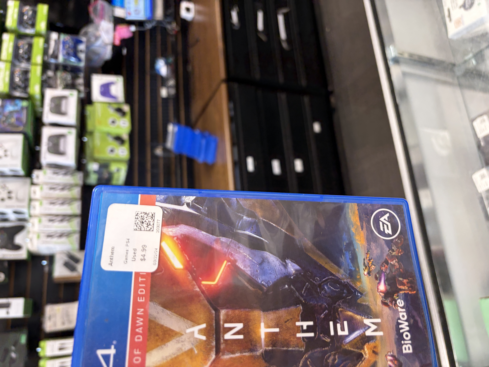
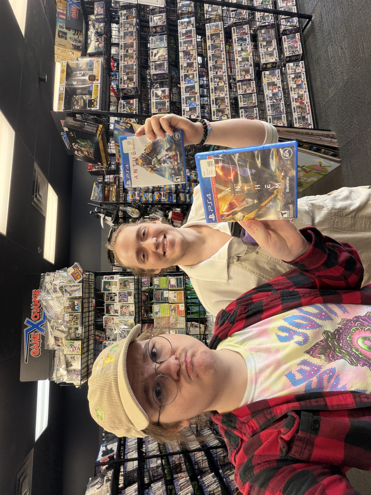
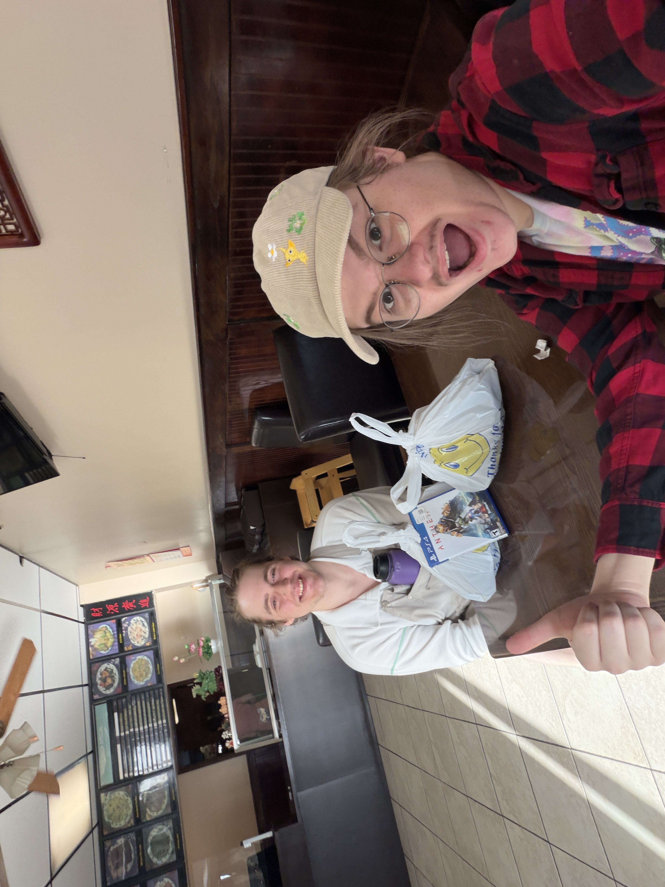

When I’m visiting my hometown, which is Middle of Hell Nowhere, Oklahoma, I looooove to go to GameXchange to just peruse their wares — once in a blue moon they even have a good deal 😳. I’ve been back here for a week and a half (leaving tomorrow) to see family, and I had a night out with my friend Delilah last week. We talked at her place and then walked around a park... and then went to GameXchange.
We wandered around for like an hour in there, man, just fucking talking. Movies we’d seen, how we’d been, the shit they had on their shelves. We stood by the blu-ray wall and I talked about Zombie Strippers! for like five minutes. It was real good. Eventually we walked by the PS4 section and saw a whole row of Anthem copies. Like, literally 20 copies or something. We joked how it’s literally unplayable and I was like “you know I kind of do wanna spend $5 on a box 😭”. The guy working overheard us, and apparently had no idea Anthem was completely unplayable nowadays. And it’s store policy not to have stuff like that on the shelves. So he was like “I can give you guys copies if you want”.

The Saved in front of a pile of Anthems in the background.
I am now the proud single parent of an Anthem Legion of Dawn edition 🥹💞

Delilah and I in the store.
I ended up buying an MSRP HG GFred and then we went to China Wok, which has the best tofu in Middle of Hell Nowhere. I made a trillion jokes about how our lives were gonna change from playing Anthem (which they are)! Can’t wait to get back to my apartment in Minnesota and put this bad boy in my PS4 so it can live in the disc drive.

Delilah and I (and Anthem) in China Wok 😍 my soyface is glowing